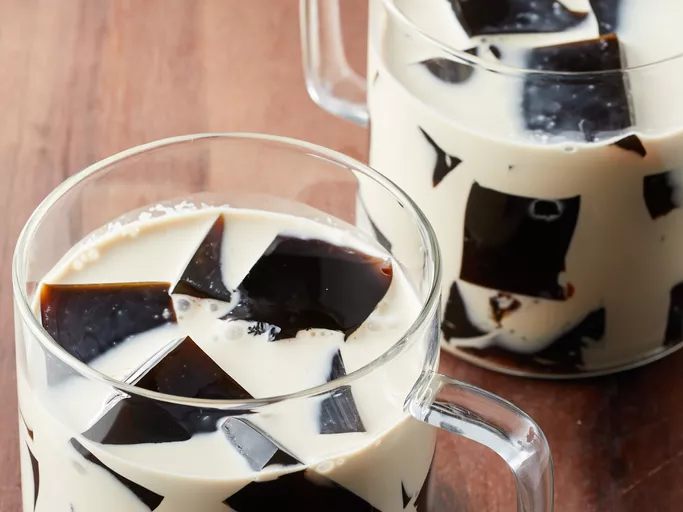

Home
Recipes

Coffee jelly is a simple, jiggly dessert made by mixing brewed coffee with gelatin, creating a lightly sweet, refreshing treat.
Ingredients
- 2 tablespoons hot water
- 1 (.25 ounce) package unflavored gelatin
- 2 cups fresh brewed coffee
- 3 tablespoons white sugar
Steps
- Gather all ingredients.
- Stir gelatin and hot water together in a small bowl until gelatin dissolves; pour into a saucepan. Stir in coffee and sugar; bring to a boil over high heat.
- Pour coffee mixture into a shallow, 9-inch square baking dish. Chill in the refrigerator until solidified, 6 to 7 hours.
- Cut coffee jelly into cubes to serve.
- Enjoy!